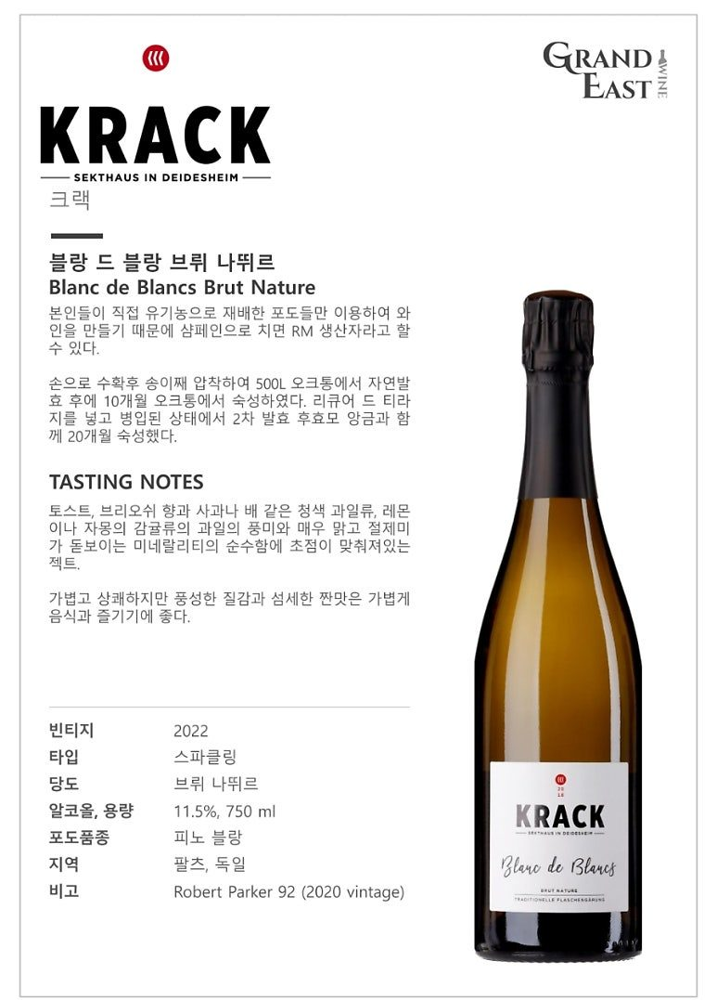
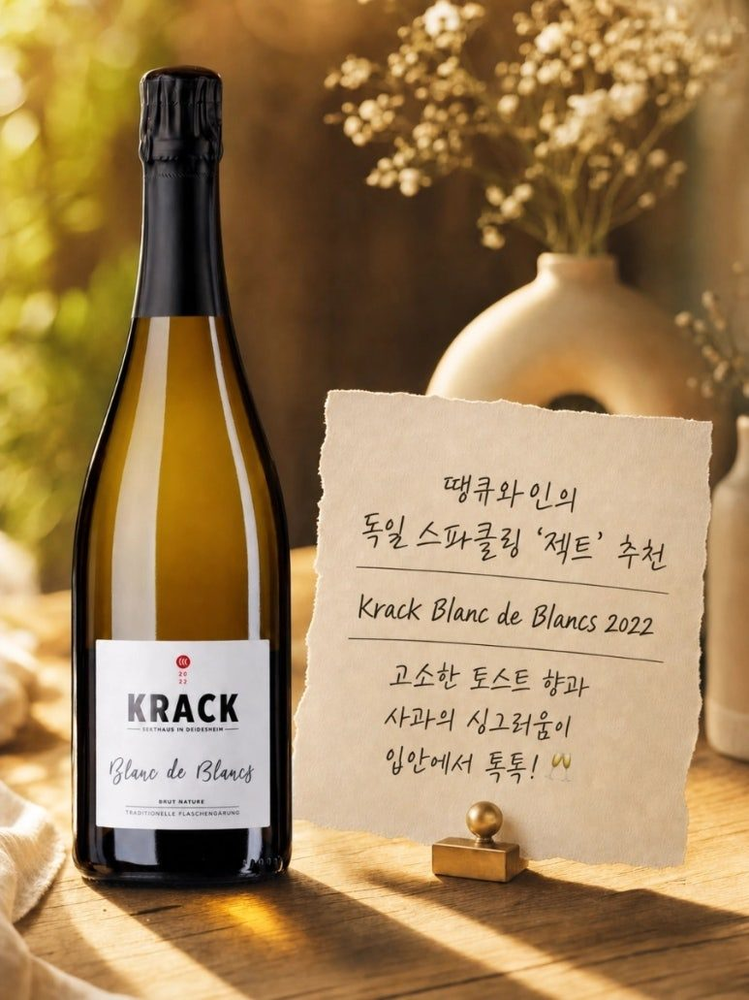

독일 스파클링 젝트 추천 크랙 블랑 드 블랑 브뤼 나뛰르 2022
전 세계 스파클링 와인 애호가들의 시선이 프랑스 샴페인을 넘어 독일의 프리미엄 스파클링 와인인 젝트(Sekt)로 향하고 있습니다. 오늘 소개할 와인은 독일 팔츠 지역에서 장인 정신으로 완성한 최고의 스파클링 와인, 크랙(Krack) 블랑 드 블랑 브뤼 나뛰르 2022 빈티지입니다.
독일 젝트의 진수를 보여주다,
크랙 블랑 드 블랑 브뤼 나뛰르 2022

전 세계 스파클링 와인 애호가들의 시선이 프랑스 샴페인을 넘어 독일의 프리미엄 스파클링 와인인 젝트(Sekt)로 향하고 있습니다. 오늘 소개할 와인은 독일 팔츠 지역에서 장인 정신으로 완성한 최고의 스파클링 와인, 크랙(Krack) 블랑 드 블랑 브뤼 나뛰르 2022 빈티지입니다.
크랙 와이너리는 본인들이 직접 유기농으로 재배한 포도만을 이용하여 와인을 만들기 때문에, 샴페인으로 치면 밭 관리부터 양조까지 직접 도맡아 하는 RM(Recoltant Manipulant) 생산자와 같은 독보적인 희소성과 철학을 자랑합니다. 순수한 테루아를 고스란히 담아낸 이 와인의 상세한 매력을 전해드립니다.

PART 1. 500리터 오크통 발효와 전통 방식의 정교한 미학
크랙 블랑 드 블랑 브뤼 나뛰르는 포도를 손으로 수확한 후 송이째 압착하여 500리터 크기의 오크통에서 자연 발효를 진행합니다. 이후 10개월 동안 오크통에서 숙성 과정을 거치며 부드러운 질감과 복합적인 풍미의 뼈대를 다집니다.
여기에 리큐어 드 티라지를 넣고 병입된 상태에서 2차 발효를 진행하며, 효모 앙금(Lees)과 함께 무려 20개월 동안 숙성하여 스파이시하고 고소한 풍미를 화사하게 끌어올렸습니다. 도사주(설탕 첨가)를 하지 않는 브뤼 나뛰르(Brut Nature) 스타일인 만큼, 포도 본연의 순수한 에너지와 산미를 완벽하게 즐길 수 있습니다.
PART 2. 테크니컬 데이터 및 상세 지표
* 빈티지 : 2022
* 타입 : 스파클링
* 당도 : 브뤼 나뛰르 (Brut Nature)
* 알코올 및 용량 : 11.5% , 750 ml
* 포도품종 : 피노 블랑 (Pinot Blanc)
* 지역 : 독일 > 팔츠 (Pfalz)
* 비고 : 2020 빈티지 로버트 파커 92점 획득
와인 스타일 지표
* 당도 : 1점 (5점 만점 기준, 도사주를 하지 않아 잔당감이 전혀 없고 지극히 드라이합니다.)
* 바디 : 2.5점 (5점 만점 기준, 가볍고 상쾌하지만 효모 숙성에서 오는 풍성한 질감이 살아있습니다.)
* 산도 : 4.5점 (5점 만점 기준, 입안을 짜릿하고 깨끗하게 깨워주는 정교한 산미를 자랑합니다.)
PART 3. 전문가가 전하는 테이스팅 노트
코끝을 대면 전통 방식 스파클링 와인 특유의 고소한 토스트와 부드러운 브리오슈 향이 아주 우아하게 피어오릅니다. 뒤이어 사과나 배 같은 청색 과일류의 싱그러움과 레몬, 자몽 같은 감귤류 과일의 맑은 풍미가 겹겹이 살아납니다.
가장 매력적인 부분은 바로 미네랄리티입니다. 매우 맑고 절제미가 돋보이는 미네랄리티의 순수함에 초점이 맞춰져 있어 마시는 내내 깨끗한 인상을 줍니다. 가볍고 상쾌한 기포 뒤로 느껴지는 풍성한 질감과 섬세한 짠맛의 힌트는 깊은 여운을 남깁니다.
PART 4. 추천 포인트 및 페어링
독일의 최고급 피노 블랑 품종으로 빚어낸 젝트의 품격은 물론, 로버트 파커 92점을 기록할 만큼 세계적으로 품질을 인정받은 와이너리라는 스토리는 와인 테이블을 더욱 특별하게 만들어 줍니다.
섬세한 짠맛과 맑은 미네랄리티, 기분 좋은 산미 덕분에 가볍게 음식과 즐기기에 아주 좋습니다. 신선한 굴이나 조개 요리는 물론이고, 가벼운 핑거 푸드나 하몬, 바삭하게 튀겨낸 튀김류와 곁들이시면 와인의 청량한 기포가 기름진 맛을 완벽하게 잡아주며 최고의 마리아주를 보여줍니다.
독일 팔츠의 깨끗한 자연과 장인의 시간이 만들어낸 크랙 블랑 드 블랑 브뤼 나뛰르. 이번 주말, 샴페인을 능가하는 정교한 젝트 한 잔으로 식탁 위에 화사한 축제를 더해보시는 건 어떨까요?
010-8078-7493 문자 주시면 가장 빠르게 안내해 드립니다.
이 글은 땡큐와인 네이버 블로그에 먼저 올린 글이에요.